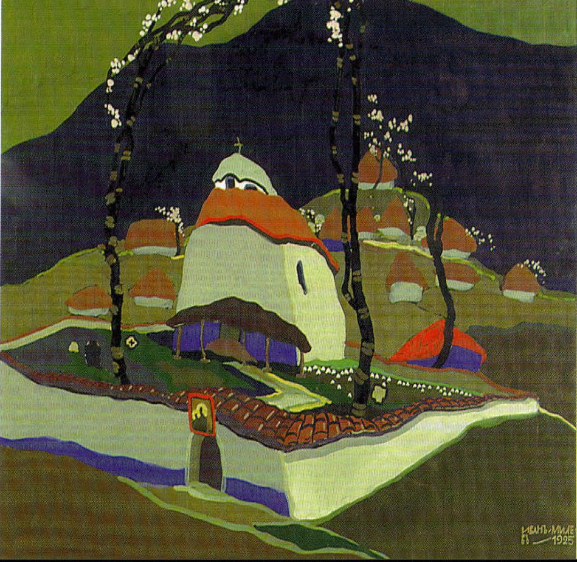

ИВАН МИЛЕВ (1897-1927)

- Биография:Иван Милев е роден на 19 февруари 1897 г. в село Казанлък.
Учи в Художественото индустриално училище в София.
Участва в Първата световна война.
След войната специализира в Мюнхен.
Работи като учител и като художник-декоратор в Народния театър.
- Значими творби: "Жътва" (1920),
"Кръщение" (1923),
"Родопска Мадона" (1925),
"Легенда" (1925),
"Мъглижкият манастир" (1924),
"Илинден" (1925),
- Художествен стил:Иван Милев създава уникален стил, който е синтез между:
Сецесион,
Символизъм,
Български фолклорни мотиви,
Ярки, наситени цветове,
Декоративност,
Стилизирани фигури,
Плоскостно изображение,